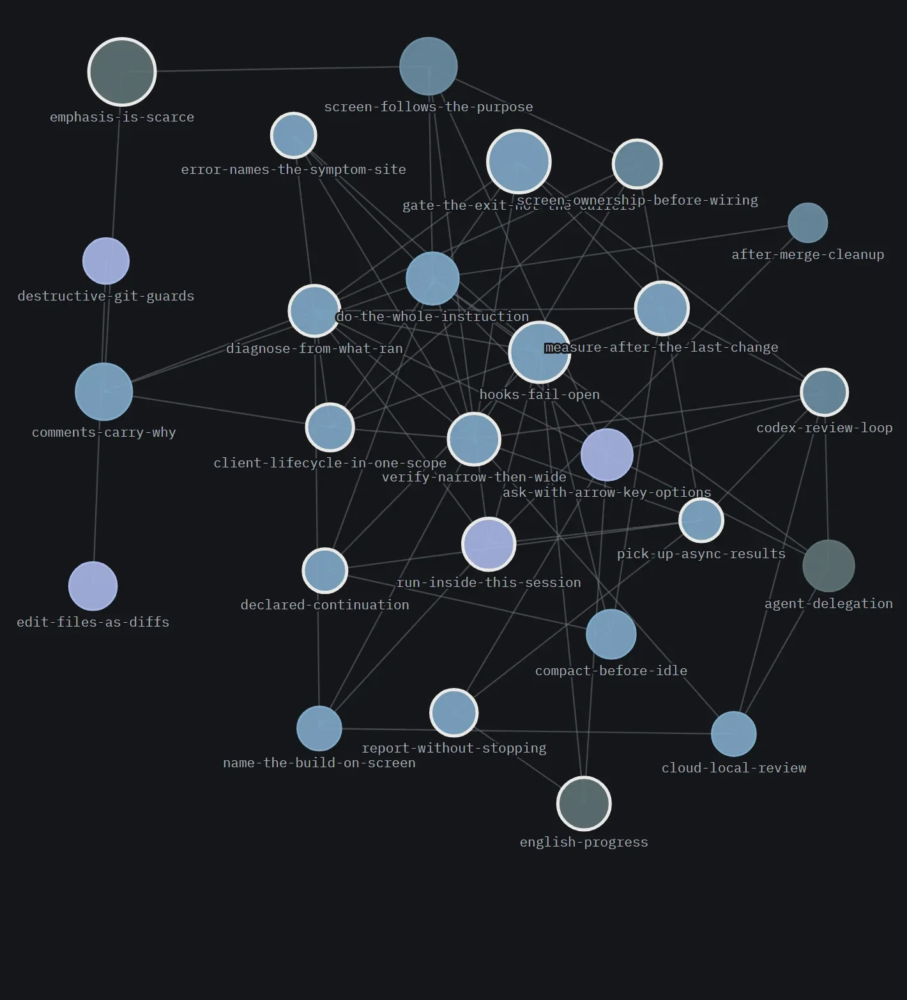

규칙을 먼저 읽히는 훅
교훈을 규칙 페이지로 적어 두면, 훅이 사람의 말을 보고 맞는 페이지를 골라 에이전트에게 먼저 건네요. 에이전트는 그 규칙을 이미 읽은 채로 일을 시작해요. 앱 없이도 Claude Code나 Codex를 쓰는 어느 저장소에나 붙어요.
규칙 한 장
규칙 페이지는 이렇게 생겼어요
규칙 하나가 마크다운 파일 하나예요. 맨 위에 어떤 말에 반응할지(triggers), 얼마나 중요한지(severity), 아예 막을 명령이 있는지(enforce)를 적고, 그 아래에 규칙과 이유를 써요.
모든 페이지가 붙는 건 아니에요. 어기면 사고가 나는 것(landmine)과 꼭 지켜야 하는 약속(contract)만 훅이 밀어 넣어요. 취향에 가까운 것(preference)은 목록에만 두고 에이전트가 필요할 때 열어요. 다 밀어 넣으면 결국 아무것도 안 읽히는, 처음의 문제로 돌아가거든요.
--- scope: craft severity: contract triggers: ["reset\\s+--hard", "git\\s+clean", …, "되돌려|되돌리", "작업.{0,4}(날아|잃|사라)"] enforce: deny: ["Bash(git reset --hard*)", "Bash(git clean -fdx*)"] --- # Block the git that cannot be undone Rule. `git reset --hard` and `git clean -fdx` are blocked. …
deny에 적은 두 명령은 읽었든 안 읽었든 실행 자체가 막혀요. 본문은 영어지만 triggers에는 한국어도 들어 있어요. 사람이 한 말에 걸려야 하니까요.언제
훅은 네 번 끼어들어요
Claude Code와 Codex는 정해진 순간에 바깥 스크립트를 부를 수 있어요. 이 위키는 그중 네 자리를 써요.
“뭘 하던 중이었지”나 “그걸 왜 그렇게 정했지”는 어떤 말에도 걸리지 않아요. 그래서 이런 건 말을 기다리지 않고 세션을 열 때 먼저 넣어요. 같은 세션에서 이미 통째로 받은 규칙은 다음부터 핵심 문단만 보내서 토큰을 아껴요.
- 세션을 열 때SessionStart지금 브랜치, 하다 만 계획의 남은 단계, 최근 결정과 그 이유, 저장소 문서 목록을 한 번 넣어요
- 말을 보낼 때마다UserPromptSubmit말에 걸린 규칙 페이지와, 한국어 말의 영어 번역을 붙여요
- 도구를 쓰기 직전PreToolUse계산해야 보이는 위반만 봐요. 파일을 통째로 되쓰기, 영어가 아닌 진행 설명 같은 것이요
- 턴이 끝날 때Stop위키를 저장소의 실제 상태와 맞추고, “이어서 할게요”라고만 하고 멈춘 턴은 다시 시켜요
어떻게
지키게 하는 방법은 다섯 칸이에요
규칙을 글로만 두면 안 지켜질 수 있어요. 그렇다고 전부 기계로 막으면 엉뚱한 데서 일이 멈춰요. 그래서 싼 칸부터 시도하고, 거기서 막히면 거기서 멈춰요.
반대로, 고장 난 훅은 일을 막지 않아요. 번역 키가 없거나 스크립트가 터져도 작업은 그대로 진행돼요. 일을 멈추게 하는 강제는 결국 사람이 꺼 버리니까요.
- 1명령 자체를 금지어기는 게 명령 모양이면 설정 한 줄로 막아요.
git reset --hard처럼요.한 줄 - 2말에 맞는 규칙을 붙이기이 위키의 중심이에요. 페이지마다 자기가 반응할 말을 적어 두고, 훅이 골라 붙여요.정규식 몇 줄
- 3절차서로 굳히기같은 지시를 자꾸 하게 되면 순서가 틀릴 수 없는 스킬 파일로 만들어요.파일 하나
- 4도구 실행 직전 검사계산해 봐야 보이는 위반만 여기서 잡아요. 오탐이 생길 수 있어서 대상을 좁게 잡아요.스크립트 하나
- 5그냥 글판단이 필요한 건 글로 남겨요. 안 지켜질 수도 있다는 걸 알고 두는 칸이에요.안 지켜질 수도
어디에
규칙은 서랍 세 개에 나눠 넣어요
프로젝트 A에서 생긴 주의사항이 프로젝트 B로 새어 들어가는 것도 사고예요. 그렇다고 하나도 나누지 않으면 같은 교훈을 프로젝트마다 다시 가르쳐야 하고요. 그래서 누구를 따라가는 규칙인지로 나눠요.
| 서랍 | 따라가는 것 | 예 |
|---|---|---|
operator/ | 사람의 일하는 방식 | 리뷰 루프 돌리는 법 · 결정은 선택지로 묻기 · 파일은 고칠 부분만 고치기 |
craft/ | 에이전트의 기술 | 먼저 재현하기 · 초록불도 의심하기 · 되돌릴 수 없는 git 명령 막기 |
project | 그 저장소만의 사정 | 검사 명령 · 포트 · 구조상 지켜야 할 것. 각 프로젝트의 .wiki/에 둬요 |
손으로 쓴 규칙 페이지는 스물여섯 장뿐이에요. 나머지 문서는 세션을 열 때 목록만 넣고, 본문은 에이전트가 필요할 때 열어요. 규칙이 실패하는 방식은 “안 읽었다”라서 훅이 밀어 넣고, 문서가 실패하는 방식은 “있는 줄 몰랐다”라서 목록이면 충분해요.


붙이기
새 프로젝트에는 세고, 겹치고, 붙여요
- 세기census대화 기록에서 무엇이 깨졌는지 세요. 요약하지 않고 세고 비교해요
- 겹치기intersect여러 프로젝트에서 같이 터진 사고를 찾아 설정 초안을 만들어요
- [연결]앱설정을 쓰고, 훅을 설치하고, 실제 세션으로 시험해요. 있던 설정은 덮지 않아요
프로젝트는 .wiki/wiki-revision에 위키의 커밋 번호를 적어 고정해요. 그래야 팀 전원이 같은 버전의 규칙을 써요. 직접 설치하는 순서는 사용법의 “내 프로젝트에 규칙 붙이기”에 있어요.